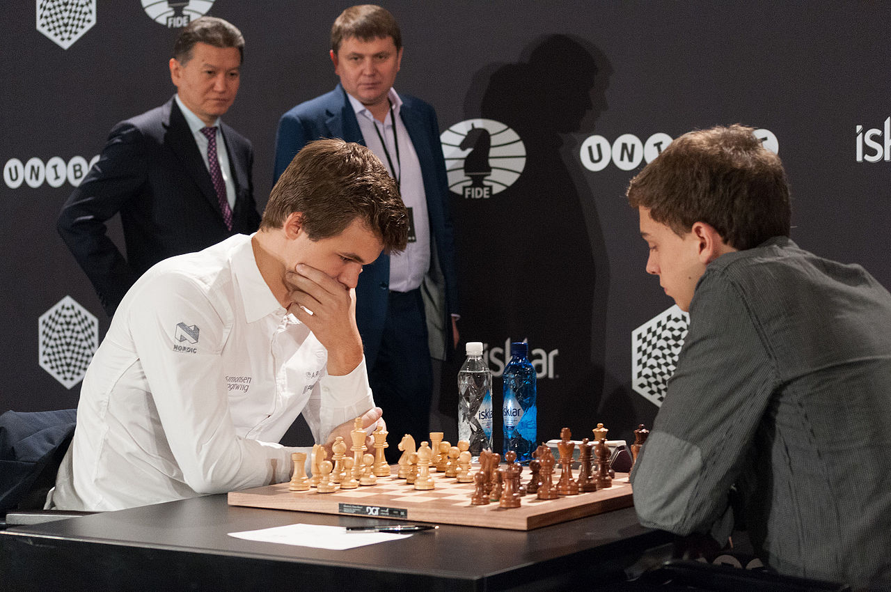

Viktiga år:
- 500-talet – Spelet uppstår i Indien
- 1400-talet – Schack sprids i Europa
- 1900-talet – FIDE bildas
Schack började i Indien på 500-talet som ett spel som hette chaturanga. Det kom sedan till Persien och kallades shatranj, och därifrån spreds det vidare till Europa under medeltiden.
På 1400-talet ändrades reglerna och spelet blev mer likt det schack vi spelar idag.
På 1800-talet började man ha tävlingar / turnamenter där Wilhelm Steinitz blev första officiella världsmästare 1886.
Under 1900-talet blev spelet ännu större och FIDE bildades, 1997 vann en dator som hette Deep Blue över världsmästaren Garry Kasparov.
Idag spelas schack över hela världen, både som sport och på nätet via exempelvis chess.com

Krishna och Radha spelar chaturanga
Magnus Carlsen i Blitz-FM i Berlin 2015